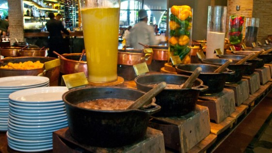
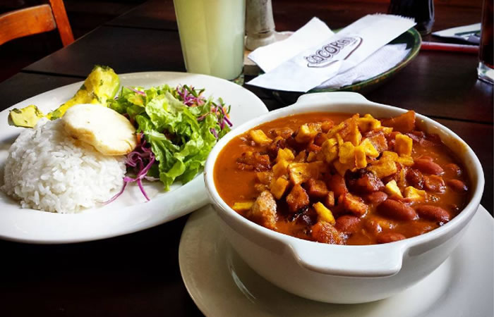

Rubaiyat: a tiempo para la última feijoada
15 mayo 2018
Frijoles, arroz, naranja, carnes de cerdo, chorizos, salchichas, lomo, chuletas, manitas, lengua, rabo, farofa (una receta a base de harina de mandioca, huevos, carne seca y perejil). Son los protagonistas de la feijoada brasileña, uno de los platos nacionales más conocidos y que todavía puede degustarse en Rubaiyat (Juan Ramón Jiménez, 37, Madrid) hasta el 21 de abril. Como manda la tradición en el país carioca, el sábado es el día elegido para que la familia o los amigos se junten a disfrutar de una buena feijoada. Un plato que según la cultura popular, tiene su origen en los guisos que preparaban los esclavos negros cuando los señores de las plantaciones habían organizado un tremendo festín.

camila06_:me gusto mucho. gracias por compartir.
¿Fríjoles con garra o Fríjoles rancheros?
15 mayo 2018
Cuando los colombianos hablamos de fríjoles, generalmente van con un acompañamiento estrella. Aquí le mostramos opciones para acompañar sus fríjoles con receta incluida.

Carlos-1220:me gusto mucho. gracias por compartir.
Camilo@5:en donde estan las recetas?